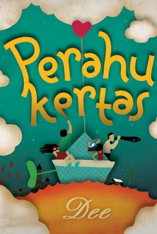
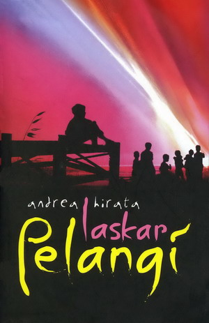
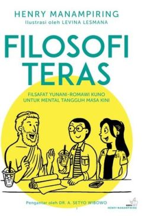

Dilan: Dia adalah Dilanku Tahun 1990
Penulis: Pidi Baiq
Penerbit: Pastel Books
Tahun: 2014
Kutipan: “Jangan rindu. Berat. Kamu tak akan kuat. Biar aku saja.”

Perahu Kertas
Penulis: Dee Lestari
Penerbit: Bentang Pustaka
Tahun: 2009
Kutipan: "Hidup itu seperti perahu kertas, kita harus berani melepaskannya agar menemukan tujuan.”

Laskar Pelangi
Penulis: Andrea Hirata
Penerbit: Bentang Pustaka
Tahun: 2005
Kutipan: "Hiduplah untuk memberi sebanyak-banyaknya, bukan untuk menerima sebanyak-banyaknya."

Filosofi Teras
Penulis: Henry Manampiring
Penerbit: Kompas
Tahun: 2018
Kutipan: "Kita tidak bisa mengendalikan semua hal, tetapi kita bisa mengendalikan cara kita meresponsnya."
Catatan Najwa
Penulis: Najwa Shihab
Penerbit: Literati
Tahun: 2016
Kutipan: “Perubahan tidak datang dari orang yang hanya menunggu.”